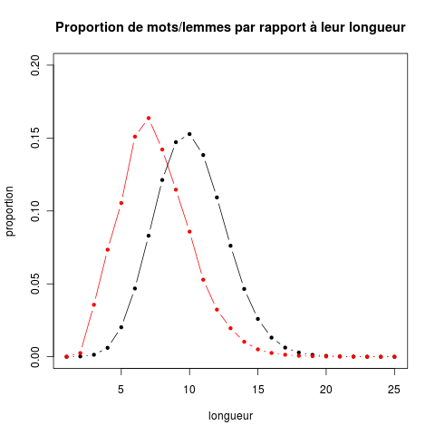

Découverte de R
L'objectif de ce TD est de vous familiariser avec un outil propice à
expérimenter des idées dans le cadre du cours de modélisation du
comportement. Cet outil est R,
un environnement libre pour les statistiques, mais en réalité bien
plus que cela.
Ce TP est réalisé sous Linux/Ubuntu. Sachez néanmoins que R fonctionne
sous Linux, Windows et MacOS d'une manière générale. Nous recommendons
néanmoins son utilisation sous Linux comme étant la plus fiable de
toute.
R : une calculatrice
Calculs élémentaires
L'utilisation la plus simple de R est de l'utiliser comme une
« simple » calculatrice. On verra que c'est en fait une
calculatrice très sophistiquée.
Par exemple, tapez la commande suivante (tous les exemples doivent
être tapés ; le symbole > indique qu'il s'agît d'une commande
R : vous ne devez pas le taper, il est déjà affiché à l'écran) :
> 2+3
R vous répond immédiatement :
[1] 5
Si on laisse de côté le [1] qui sera expliqué plus loin, on
obtient bien le résultat attendu.
Naturellement, tous les opérateurs habituels sont disponibles, ainsi
que les fonctions logarithmiques, trigonométriques, et bien d'autres.
On peut affecter le résultat d'un calcul à une variable. Une variable
est une entité qui porte un nom et qui contient une valeur. Par
exemple, si on tape :
> a <- 2 * sqrt (5) + pi
R n'affiche rien, mais il a :
- calculé la valeur de l'expression 2 * sqrt (5) + pi ;
- affecté cette valeur à une variable dont le nom est a.
L'affectation se fait donc par l'opérateur <-. À sa
gauche, on indique le nom de la variable à laquelle il faut affecter
la valeur qui se trouve à sa droite.
En passant, vous aurez noter l'utilisation de
pi pour obtenir la valeur de π. pi est une
variable pré-définie dans R dont la valeur est celle de π.
On peut afficher la valeur d'une variable en tapant simplement son
nom :
a [1] 7.613729
Naturellement, on peut utiliser la valeur d'une variable pour effectuer des calculs, par exemple :
> b <- (a - 1) * (a + 1)
Pour simplifier la saisie des commandes, vous pouvez utiliser la touche flêchée ↑ pour retrouvez les commandes que vous avez déjà tapées et pour les modifier. Ainsi, R garde l'historique des commandes que vous tapez. Vous pouvez remonter dans l'historique avec la touche ↑ et redescendre avec la touche ↓. Quand vous remontez dans l'historique, vous pouvez ensuite utiliser les touches flêchées ← et → pour éditer la commande. Ainsi, utilisez ces touches pour taper la commande suivante, qui diffère peu d'une commande que vous avez tapée plus haut :
> 3 * sqrt (5 + pi)
Prenez l'habitude d'utiliser ces touches flêchées : elles
permettent d'accélérer très sensiblement la saisie des commandes, et
ceci, même si l'on est déjà habile avec le clavier de son ordinateur.
La table suivante indique des opérateurs et des fonctions de R :
| notation en R | valeur mathématique |
|---|---|
| a + b | somme de a et b |
| a - b | b soustrait de a |
| a * b | produit de a par b |
| a / b | division réelle de a par b |
| a %/% b | division euclidienne (entière) de a par b |
| a %% b | reste de la division entière de a par b |
| a ^ b | a à la puissance b |
| sqrt (a) | racine carrée de a |
| abs (a) | valeur absolue de a |
| log (a) | logarithme naturel de de a |
| exp (a) | exponentielle de a |
| sin (a) | sinus de a (en radians) |
| cos (a) | cosinus de a (en radians) |
| tan (a) | tangente de a (en radians) |
Cette liste est loin d'être exhaustive !
À tout moment une aide en ligne est accessible avec la commande ?topic, où topic peut être remplacé par n'importe-quelle commande. Essayez, par exemple ?sqrt. (Tapez 'q' pour quitter l'aide.) Il est très important d'apprendre à lire l'aide. L'aide en-ligne contient énormément d'information : elle est là, disponible, c'est à vous d'apprendre à l'utiliser. Les pages d'aide ont toutes la même structure :
- une description rapide de la commande et, éventuellement, de commandes apparentées. Pour log, diverse commandes calculant le logarithme dans différentes bases et les exponentiations sont apparentées ;
- comment on utilise la commande ;
- les paramètres de la commande ;
- une description détaillée de la commande ;
- la valeur de la commande. Là, le comportement de la fonction dans des cas exceptionnels est indiqué ; ainsi, on apprend que log(0) a pour valeur -Inf, c'est-à-dire moins l'infini ;
- des remarques complémentaires ;
- des références bibliographiques où la manière dont la fonction est calculée est tirée ;
- d'autres commandes à consulter si l'on veut des informations complémentaires, sur d'autres fonctions proches ;
- des exemples : cette section est extrêmement utile car si l'on n'a pas compris les explications, on nous donne des exemples d'utilisation qui peuvent être directement copiées/collées dans R.
Syntaxe des commandes R
L'essentiel de ce qui est à connaître sur la syntaxe des commandes R est d'ors et déjà vu ; on voit ainsi que cette syntaxe est très simple. On la résume ci-dessous :
- pour obtenir la valeur d'une expression : on tape cette expression ;
- pour affecter une valeur à une variable : nom de la variable <- valeur à affecter ;
- pour obtenir la valeur d'une variable : on donne le nom de la variable ;
- le nom d'une fonction est toujours suivie de parenthèses entre lesquelles on indique les paramètres de la fonction.
Vecteurs
Après les simples nombres, un deuxième type fondamental d'entités dans R est le vecteur. Un vecteur peut-être créé de différentes manières. Par exemple, créons un vecteur dont les éléments sont 0, -1, π et 4,78 et mettons-le dans une variable dont le nom est v :
> v <- c (0, -1, pi, 4.78)
La fonction c construit un vecteur avec ces valeurs. On peut ensuite consulter la valeur des composantes du vecteur :
> v [1] 0.000000 -1.000000 3.141593 4.780000
On retrouve bien les valeurs avec lesquelles on a initialisé le
vecteur.
De nombreuses fonctions s'appliquent aux vecteurs. La table ci-dessous
en contient un certain nombre ; essayez-les toutes :
| notation en R | valeur | résultat sur l'exemple |
|---|---|---|
| length (v) | nombre d'éléments de v | 4 |
| min (v) | valeur de l'élément minimal de v | -1 |
| max (v) | valeur de l'élément maximal de v | 4.78 |
| range (v) | vecteur composé des deux valeurs précédentes (le min et le max de v) | -1.00 4.78 |
| sum (v) | valeur de la somme des éléments de v : Σivi | 6.921593 |
| prod (v) | valeur du produit des éléments de v : Πivi | 0 |
| which.min (v) | indice de l'élément minimal de v (arg mini vi) | 2 |
| which.max (v) | indice de l'élément maximal de v (arg maxi vi) | 4 |
Opérations mathématiques sur les vecteurs
R peut naturellement effectuer toutes les opérations habituelles sur les vecteurs. Les opérateurs vues plus haut sur les nombres (+, -, ...) et les fonctions (abs, log, ...) s'appliquent sur les vecteurs comme on s'y attend. Toutes ces opérations se font terme à terme : aussi, quand il y a deux vecteurs (comme pour une addition), il faut que les deux vecteurs aient le même nombre d'éléments.
- définissez un vecteur dénommé w et initialisez ses composantes avec 3, -78, 0, 4 ;
- faites la somme de v et w ;
- faites v * w : qu'obtenez-vous ?
- même question pour v / w, v %/% w, v %% w et v ^ w ;
- idem pour abs (v).
Une opération très classique est de calculer le produit scalaire de
deux vecteurs. Rappelons que le produit scalaire des vecteurs v et w
est égal à la somme des produits Σ
- avec ce que l'on a vu précédemment, comment feriez-vous pour calculer le produit scalaire de deux vecteurs ?
- essayez v %*% w et concluez vous-même.
Enfin, on peut ajouter un scalaire aux éléments d'un vecteur, la soustraire, la multiplier, ... par les opérateurs habituels (+, -, *, ...) en combinant un vecteur et un scalaire. Ainsi,
v + 3
produit un vecteur dont les composantes sont celles de v augmentées de 3.
Indexation des éléments d'un vecteur
On peut aussi demander la valeur du troisième élément du vecteur à l'aide de l'opérateur [ :
v [3] [1] 3.141593
On peut aussi demander la valeur des éléments 1 et 3 du vecteur en fournissant plusieurs indices, comme suit :
v [c (1, 3)] [1] 0.000000 3.141593
On voit que pour cela, on a spécifié un vecteur dont les composantes
sont les indices qui nous intéressent (c (1, 3) est un
vecteur de deux éléments, le premier vaut 1, le second vaut 3).
On vient donc de présenter une opération très utile et très importante
en R : accéder aux éléments d'un vecteur
en utilisant un autre vecteur (dénommé « vecteur d'index ») qui contient le numéro
des composantes que l'on veut sélectionner.
Une autre manière de spécifier les indices qui nous intéressent est la
suivante : 2:4 est un vecteur dont les éléments sont
2, 3 et 4.
Une autre notation pour la même chose consiste à utiliser la fonction
seq(). Ainsi,
> seq (2, 4)
(ou
> seq (from = 2, to = 4)
) produit un vecteur dont les éléments sont 2, 3 et 4.
L'intérêt de cette fonction seq()uence et que l'on peut lui
indiquer plus généralement la valeur du premier indice, du dernier
indice et de l'incrément pour passer de l'un à l'autre. Ainsi :
> seq (from = 1, to = 10, by = 2) [1] 1 3 5 7 9
l'incrément peut aussi être négatif :
> seq (from = 10, to = -5, by = -2) [1] 10 8 6 4 2 0 -2 -4
La fonction runif() génère des nombres pseudo-aléatoires selon une distribution de probabilité uniforme. On va l'utiliser pour générer des vecteurs aussi grands que l'on veut. Ainsi, tapez :
> vu <- runif (100)
et la variable vu contient un vecteur de 100 composantes dont la valeur a été tirée au hasard entre 0 et 1.
- quelle est la somme des composantes du vecteur vu ?
- quelle commande tapez-vous pour calculer la somme des éléments d'indice pair de vu ?
- on veut obtenir le vecteur vs ayant 50 composantes, dont la valeur de la composante i est la somme des composantes 2*i-1 et 2*i de vu. Comment faites-vous ?
Quelques fonctions statistiques sur les vecteurs
Les fonctions statistiques les plus simples sont résumées dans la table ci-dessous :
| notation en R | valeur | résultat sur l'exemple |
|---|---|---|
| mean (v) | la moyenne des éléments de v | 1.730398 |
| var (v) | la variance des éléments de v | 7.246964 |
| sd (v) | l'écart-type des éléments de v | 2.692019 |
| summary (v) | fournit plusieurs statistiques sur les éléments de v |
Min. 1st Qu. Median Mean 3rd Qu. Max. -1.000 -0.250 1.571 1.730 3.551 4.780 |
- Comprenez ce que représentent toutes les valeurs affichées par summary(v).
- Quelles sont la moyenne et l'écart-type des composantes de
vu ? Qu'en pensez-vous ? (rappelons que l'espérance de la variance d'un échantillon de nombres uniformément distribués dans l'intervalle [0,1] est 1/12.)
La fonction rnorm (100, mean = 3, sd = 5) génère 100 nombres pseudo-aléoires tirés selon une loi normale de moyenne égale à 3 et d'écart-type égal à 5.
- Mettez dans un vecteur nommé v.norm 200 nombres tirés selon une loi normale de moyenne égale à -1 et d'écart-type égal à 2.
- Mettez dans un vecteur nommé v.unif 200 nombres tirés selon une loi uniforme.
- Calculez la moynne et l'écart-type de ces deux vecteurs. Que pensez-vous du résultat ? Est-il conforme à vos attentes ?
Lire un vecteur depuis un fichier
Supposons que l'on ait placé le résultat d'une série d'expériences dans un fichier (un nombre pour chaque expérience). On pourra charger ces valeurs dans un vecteur avec la commande suivante :
> v <- scan (file = "fichier-ou-url", what = double(), quiet = T)
Notez que l'on peut aussi spécifier l'url d'un fichier. Par exemple, tapez la commande suivante qui va charger le contenu d'un fichier accessible via l'url https://philippe-preux.github.io/ensg/aeac/tps/decouverte-R/lg.txt (cliquez d'abord sur le lien pour voir le contenu du fichier) :
> v <- scan (file = "https://philippe.preux.github.io/ensg/aeac/tps/decouverte-R/lg.txt", what = double(), quiet = T)
Vous pouvez vérifier que le vecteur v contient bien les valeurs attendues.
Quelques graphiques
Pour étudier un tel ensemble de données, il est utile de faire des graphiques. Ainsi, on peut réaliser un graphique représentant cette suite de nombre à l'aide la fonction plot (). Tapez les commandes suivantes et après chacune, regardez le résultat.
> plot (v)
> plot (v, col = "green")
> plot (v, col = "green", main = "Un jeu de données")
> plot (v, col = "green", main = "Un jeu de données", xlab = "Abcisses", ylab = "Ordonnées")
col est le diminutif de color. Il y a un grand nombre de couleurs connues dans R. Cette image :

les représente. Chacune est numérotée et porte un nom. Pour connaître le nom de la couleur 9, on tape :
> colors () [9]
Ça a l'air compliqué, mais la notation s'explique : juste taper la commande :
> colors ()
affiche la liste des 657 couleurs prédéfinies dans R. En
ajoutant [9], on sélectionne juste le nom de la
9è. Le résultat de colors () est simplement un
vecteur, non pas de nombres, mais de chaînes de caractères et on
retourve la notation pour sélectionner le 9è élément d'un
vecteur par v [9] vue plus haut.
On peut aussi fournir le nom directement :
> plot (v, col = "cornflowerblue", pch = 20)
La valeur (ici 20) du paramètre pch indique la forme des points. La table ci-dessous montre la forme de différentes valeurs :

> plot (v, pch = 20, type = "l") > plot (v, pch = 20, type = "p") > plot (v, pch = 20, type = "b") > plot (v, pch = 20, type = "b", lty = 2)
(remarquez que dans la première ligne, le paramètre pch = 20 ne sert à rien ; il peut être omis.)
- Dans la dernière ligne, le paramètre lty prend une valeur entre 0 et 6 (inclus). Essayez-les pour voir le résultat.
- À quoi la forme de cette courbe vous fait-elle penser ?
Ces données représentent le nombre de mots d'une longueur donnée
contenus dans une liste de 336531 mots de la langue française (disponible sur le web en suivant ce
lien). À la ligne i, on trouve le nombre de mot de cette
longueur. Ainsi, il y a 3 mots de 1 lettre, 91 de deux lettres, et
ainsi de suite jusque 2 mots de 25 lettres. Comme on s'y attend, il y
a un grand nombre de mots de taille intermédiaire.
- quelle est la longueur moyenne de ces 336531 mots ?
- quelle en est la variance ?
On peut tracer une loi normale ayant cette moyenne et cet écart-type et comparer à l'œil le résultat. La commande :
> plot (v/sum(v))
refait le graphique mais cette fois-ci les ordonnées sont des
proportions et non plus des décomptes.
Une fois un graphique réalisé avec plot(), on peut ajouter une autre courbe en utilisant la fonciton points(). Celle-ci s'utilise à peu près comme plot(). Par exemple, si on veut ajouter la racine carrée des valeurs (ça n'a aucun intérêt, c'est juste pour expliquer points()), on fera :
> points (sqrt (v/sum (v)), col = "red")Les points sont ajoutés en rouge.
Petit problème : ces points rouges débordent en haut : l'intervalle de valeurs en ordonnées est trop restreint. Pour l'agrandir, on peut spécifier cet intervalle dans la commande plot : si on veut que les ordonnées soient compris entre 0 et 0,5, on tapera :
> plot (v / sum (v), ylim = c (0, 0.5)) > points (sqrt (v/sum (v)), col = "red")
Tableaux de données
Pour l'instant, nous avons travaillé avec des données disponibles sous forme d'un vecteur de nombres. Plus généralement, les données ont une forme de tableau (matrice). Un tableau de données se nomme un data frame dans R. Ceux-ci se manipulent comme un vecteur, si ce n'est que les éléments sont repérés par deux indices au lieu d'un seul.
Motivation : les données que nous avons étudiées jusqu'à maintenant ont été obtenues à partir d'un ensemble de 336531 mots différents. Cette liste distingue la forme singulière de la forme plurielle, mais aussi toutes les formes de conjugaison de chaque verbe. À la place, on peut étudier la même distribution de longueur sur la forme dite « lemmatisée » des mots ; cette forme lemmatisée ressemble à ce que l'on nomme couramment la racine d'un mot. Ainsi, au lieu des 20 à 30 mots correspondants aux différentes formes d'un verbe conjugué, on a 1 seul lemme. À partir des 336531 mots, on obtient 74523 lemmes. On a alors calculé le nombre de lemmes de longueur 1, 2, ... 25 et on a mis le résultat dans une table disponible via l'url https://philippe-preux.github.io/ensg/aeac/tps/decouverte-R/lg.df.txt (cliquez d'abord sur le lien pour voir le contenu du fichier).
Les données sont maintenant structurées en 3 colonnes. La première est la longueur, la deuxième est constituée des données rencontrées depuis le début de la séance et la troisième est donc le nombre de lemmes de chaque longueur.
On charge ces données dans un data frame comme suit :
> lg.df <- read.table ("https://philippe.preux.github.io/ensg/aeac/tps/decouverte-R/lg.df.txt")
Tapez ensuite lg.df pour voir le contenu de cette variable. C'est bien le tableau vu ci-dessus.
- lg.df [5, 3] est l'élément en 5è ligne, 3ècolonne, soit 7857.
- lg.df [5,] est le vecteur composé des éléments de la 5è ligne.
- lg.df [, 3] est le vecteur composé des éléments de la 3è colonne.
- comme pour les vecteurs, on peut spécifier un ensemble de lignes ou de colonnes, comme dans lg.df [c (3, 6, 13), 2]
- faire un graphique superposant la distribution des longueurs de mots et la distribution des longueurs de lemmes.
- faites en sorte que votre graphique ressemble à celui-ci :
 - On peut facilement mettre un graphique dans un fichier jpg, png ou pdf (ou d'autres formats encore). Pour mettre un graphique dans un fichier dénommé mon.beau.graphique.jpg, on fait comme suit :
> jpeg ("mon.beau.graphique.jpg") > j'effectue les commandes qui réalisent ce graphique > dev.off()Les commandes ne produisent aucun effet visible à l'écran : elles s'effectuent dans le fichier spécifié. dev.off() indique que la graphique est terminé ; ensuite, les commandes graphiques reprennent leur effet habituel à l'écran.
De même, on utilisera png ("toto.png") pour mettre le graphique dans un fichier png ou pdf ("document.pdf") pour le mettre dans un document pdf.
Mettez votre graphique précédent dans un fichier dénommé deuxCourbes.png.
On peut ajouter une légende à un graphique. Par exemple, pour le graphique précédent, ajouter :
> legend(20, 0.2, # position coin supérieur gauche de la légende
c("mots","lemmes"), # étiquettes associées aux courbes
lwd=c(1, 1), # style des traits : 1 = traits pleins
col=c("black","red")) # couleurs, dans le même ordre que les étiquettes
donne le résultat suivant :
Remarque : ce qui se trouve à droite, après le caractère # est un commentaire.
Sauvegarder son travail
Si vous voulez récupérer le travail que vous effectuez sur un ordinateur de l'université sur votre ordinateur, ou un autre ordinateur, vous devez récupérer deux fichiers localisés dans votre répertoire de travail. Ils se nomment .Rhistory et .RData. Le premier contient la liste ordonnée de toutes les commandes que vous avez tapées. Le second contient les objets que vous avez créés, avec leur valeur.
Pour terminer votre découverte de R
Un certain nombre de démos sont fournies avec R. Vous en avez la liste
avec la commande demo(). Essayez par exemple les commandes
demo(graphics), demo(persp) et demo(image).
Sachez que R permet d'appliquer de très nombreuses méthodes
statistiques que nous étudierons en cours de fouille de données ou
celles que vous étudierez dans les cours de maths (régression linéaire
et non linéaire, analyse factorielle, ...). Pour cela, il suffit
d'apprendre à manipuler R et lire la documentation pour trouver la
fonction qui fait le traitement statistique que l'on veut réaliser.
Références
Pour aller plus loin en R, mieux comprendre ce que l'on vient de faire et ce que l'on fera, et mieux connaître R :
- An Introduction to R ;
- R pour les débutants ;
- Using R for introductory statistics ;
- mémento des commandes très utiles de R ;
- un excellent site sur R, en français ;
- Pour récupérer R et l'installer sur votre machine :
- connectez-vous sur le site de R ;
- allez dans la section « Download » et cliquez sur CRAN ;
- là, vous choisissez votre mirroir, situé pas trop loin de chez vous (France ou Belgique) ;
- vous devez maintenant vous trouvez sur une page qui vous permet de récupérer R pour différentes plateformes : Linux, Mac OS, autres. Faites votre choix ;
- une fois R récupéré, son installation ne pose en principe aucune difficulté.